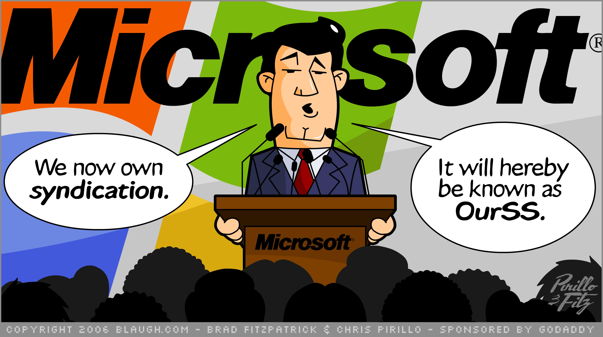

TypeScript
The Good Parts
j@son.deniz.ac • @leJDen

work on shit that matters
"Solving problems for those in the world with the least problems" [1]
HypeScript?
- hundreds of languages targetting JS
- fragmentation?
- code reuse

130 >
"bytecode of the web"
But... it's Microsoft
- embrace
- extend
- extinguish?
- 
But... it's open source Microsoft
The good parts
ES6 sugar:
- arrow functions
- class
- modules
- rest
The awesome bits
- optional static typing
- structure-based type system
- based on JS primitives
WTFs
- boolean is called bool
- no generics eg Promise<Thing>
- reference declarations... with XML?!
Soft WTFs
- documentation?
- codeplex?
- non-VS tooling
interfaces
implicit and explicit
they exist
interfaces
interfaces
interfaces
interfaces
discoverability
interfaces
encapsulation within APIs
interfaces
the interface is JS, and the implementation language doesn't matter
todo list
- implement TS intellisense in your favorite editor
- be mindful of your interfaces
- consider writing TS declarations for your libraries (or solicit contribs)
- call me names or buy me beer @leJDen